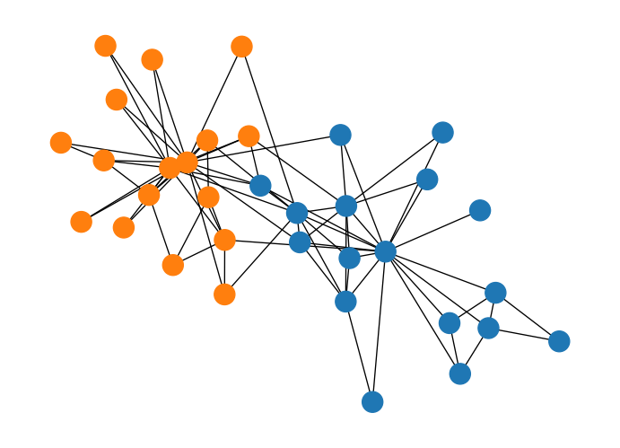
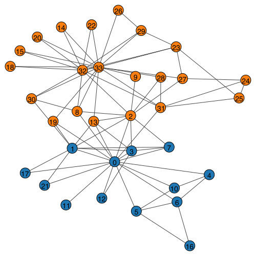

Network Embedding Concepts
1 Embedding Methods: Implementation and Practice
In this section, we implement the embedding methods discussed in the concepts section.
1.1 Spectral Embedding
Example: Spectral Embedding with Adjacency Matrix
Let us demonstrate spectral embedding with a simple example using the karate club network.
/Users/skojaku-admin/miniforge3/envs/advnetsci/lib/python3.11/site-packages/matplotlib/cbook.py:1709: ComplexWarning: Casting complex values to real discards the imaginary part
return math.isfinite(val)
/Users/skojaku-admin/miniforge3/envs/advnetsci/lib/python3.11/site-packages/matplotlib/cbook.py:1709: ComplexWarning: Casting complex values to real discards the imaginary part
return math.isfinite(val)
/Users/skojaku-admin/miniforge3/envs/advnetsci/lib/python3.11/site-packages/pandas/core/dtypes/astype.py:133: ComplexWarning: Casting complex values to real discards the imaginary part
return arr.astype(dtype, copy=True)
/Users/skojaku-admin/miniforge3/envs/advnetsci/lib/python3.11/site-packages/pandas/core/dtypes/astype.py:133: ComplexWarning: Casting complex values to real discards the imaginary part
return arr.astype(dtype, copy=True)Interestingly, the first eigenvector corresponds to the eigencentrality of the network, representing the centrality of the nodes. The second eigenvector captures the community structure of the network, clearly separating the two communities in the network.
Example: Modularity Embedding
We can use the modularity matrix to generate a low-dimensional embedding of the network.
/Users/skojaku-admin/miniforge3/envs/advnetsci/lib/python3.11/site-packages/matplotlib/cbook.py:1709: ComplexWarning: Casting complex values to real discards the imaginary part
return math.isfinite(val)
/Users/skojaku-admin/miniforge3/envs/advnetsci/lib/python3.11/site-packages/matplotlib/cbook.py:1709: ComplexWarning: Casting complex values to real discards the imaginary part
return math.isfinite(val)
/Users/skojaku-admin/miniforge3/envs/advnetsci/lib/python3.11/site-packages/pandas/core/dtypes/astype.py:133: ComplexWarning: Casting complex values to real discards the imaginary part
return arr.astype(dtype, copy=True)
/Users/skojaku-admin/miniforge3/envs/advnetsci/lib/python3.11/site-packages/pandas/core/dtypes/astype.py:133: ComplexWarning: Casting complex values to real discards the imaginary part
return arr.astype(dtype, copy=True)
Example: Laplacian Eigenmap
Let us first compute the Laplacian matrix and its eigenvectors.
The eigenvectors corresponding to the d smallest eigenvalues are:
1.2 Neural Embedding with word2vec
Example: word2vec with Text
To showcase the effectiveness of word2vec, let’s walk through an example using the gensim library.
import gensim
import gensim.downloader
from gensim.models import Word2Vec
# Load pre-trained word2vec model from Google News
model = gensim.downloader.load('word2vec-google-news-300')Our first example is to find the words most similar to king.
# Example usage
word = "king"
similar_words = model.most_similar(word)
print(f"Words most similar to '{word}':")
for similar_word, similarity in similar_words:
print(f"{similar_word}: {similarity:.4f}")Words most similar to 'king':
kings: 0.7138
queen: 0.6511
monarch: 0.6413
crown_prince: 0.6204
prince: 0.6160
sultan: 0.5865
ruler: 0.5798
princes: 0.5647
Prince_Paras: 0.5433
throne: 0.5422A cool (yet controversial) application of word embeddings is analogy solving. Let us consider the following puzzle:
man is to woman as king is to ___ ?
We can use word embeddings to solve this puzzle.
# We solve the puzzle by
#
# vec(king) - vec(man) + vec(woman)
#
# To solve this, we use the model.most_similar function, with positive words being "king" and "woman" (additive), and negative words being "man" (subtractive).
#
model.most_similar(positive=['woman', "king"], negative=['man'], topn=5)[('queen', 0.7118192911148071),
('monarch', 0.6189674735069275),
('princess', 0.5902431011199951),
('crown_prince', 0.5499460697174072),
('prince', 0.5377321243286133)]The last example is to visualize the word embeddings.
We can see that word2vec places the words representing countries close to each other and so do the words representing their capitals. The country-capital relationship is also roughly preserved, e.g., Germany-Berlin vector is roughly parallel to France-Paris vector.
1.3 Graph Embedding with word2vec
Exercise 01: Implement DeepWalk
In this exercise, we implement DeepWalk step by step.
Step 1: Data preparation
We will use the karate club network as an example.
Load the data
Step 2: Generate random walks
Next, we generate the training data for the word2vec model by generating multiple random walks starting from each node in the network. Let us first implement a function to sample random walks from a given network.
def random_walk(net, start_node, walk_length):
# Initialize the walk with the starting node
walk = [start_node]
# Continue the walk until the desired length is reached
while len(walk) < walk_length:
# Get the current node (the last node in the walk)
cur = walk[-1]
# Get the neighbors of the current node
cur_nbrs = list(net[cur].indices)
# If the current node has neighbors, randomly choose one and add it to the walk
if len(cur_nbrs) > 0:
walk.append(np.random.choice(cur_nbrs))
else:
# If the current node has no neighbors, terminate the walk
break
# Return the generated walk
return walkGenerate 10 random walks of length 50 starting from each node.
n_nodes = g.vcount()
n_walkers_per_node = 10
walk_length = 50
walks = []
for i in range(n_nodes):
for _ in range(n_walkers_per_node):
walks.append(random_walk(A, i, walk_length))Step 3: Train the word2vec model
Then, we feed the random walks to the word2vec model.
from gensim.models import Word2Vec
model = Word2Vec(walks, vector_size=32, window=3, min_count=1, sg=1, hs = 1)Here,
vector_sizeis the dimension of the embedding vectors.windowindicates the maximum distance between a word and its context words. For example, in the random walk[0, 1, 2, 3, 4, 5, 6, 7], the context words of node 2 are[0, 1, 3, 4, 5]whenwindow=3.min_countis the minimum number of times a word must appear in the training data to be included in the vocabulary.sg=1indicates that we are using the skip-gram model.hs=1indicates that we are using hierarchical softmax.
Now, we extract the node embeddings from the word2vec model. In the word2vec model, the embeddings are stored in the wv attribute. The embedding of node i is given by model.wv[i].
embedding = []
for i in range(n_nodes):
embedding.append(model.wv[i])
embedding = np.array(embedding)embedding is the matrix of node embeddings. It has the same number of rows as the number of nodes in the network, and the number of columns is the embedding dimension.
Print the first 3 nodes
array([[-1.65388197e-01, -4.10039783e-01, 9.07834321e-02,
2.14314714e-01, 1.79911003e-01, -4.75657254e-01,
3.59959185e-01, -1.53336033e-01, -3.84838223e-01,
5.60516231e-02, -4.67229411e-02, -3.30941379e-02,
6.24708645e-03, -3.59878018e-02, -2.84904867e-01,
1.42365694e-01, 7.76314214e-02, 2.27265045e-01,
1.36226922e-01, 1.99487582e-01, -3.74527834e-02,
2.18788922e-01, 6.81413054e-01, -2.35080808e-01,
3.98442417e-01, -7.66223893e-02, -6.77876174e-02,
3.70036989e-01, 2.77111232e-02, -1.87089607e-01,
-1.98098943e-01, -1.40003487e-01],
[-9.58307311e-02, -2.70568401e-01, 1.85553014e-01,
1.77078947e-01, 1.33480161e-01, -3.75176251e-01,
4.36876923e-01, 1.29179917e-02, -1.58286795e-01,
1.89899370e-01, 4.49758358e-02, 1.98613703e-02,
2.81000081e-02, 1.04280487e-02, -3.88666719e-01,
1.10761359e-01, 1.00957856e-01, 2.76120543e-01,
-2.82765366e-04, 2.81419784e-01, 1.21828265e-01,
3.21321040e-01, 6.24054253e-01, -2.10033491e-01,
4.23966616e-01, -1.80154711e-01, -6.21020868e-02,
2.70370126e-01, 1.49440974e-01, -5.07190265e-02,
-3.89826149e-01, 3.59769166e-02],
[-4.39447463e-02, -1.79456368e-01, 2.74362415e-01,
2.30749309e-01, 4.12759185e-03, -7.68075213e-02,
3.74906808e-01, 1.75127119e-01, 5.44580705e-02,
1.33252367e-01, 3.10891159e-02, -6.30377904e-02,
-9.93075594e-03, 4.85461615e-02, -2.73383021e-01,
-3.18990685e-02, -1.04697786e-01, 1.36252925e-01,
-1.43889979e-01, 4.39890623e-02, 3.17091316e-01,
3.98382157e-01, 6.03749037e-01, -1.12391137e-01,
3.32005650e-01, -1.19962253e-01, -2.17917696e-01,
8.46376866e-02, 5.95024275e-03, -2.83923090e-01,
-3.33055377e-01, 3.10265068e-02]], dtype=float32)Let’s visualize the node embeddings using UMAP.
/Users/skojaku-admin/miniforge3/envs/advnetsci/lib/python3.11/site-packages/umap/umap_.py:1952: UserWarning: n_jobs value 1 overridden to 1 by setting random_state. Use no seed for parallelism.
warn(
OMP: Info #276: omp_set_nested routine deprecated, please use omp_set_max_active_levels instead.Step 4: Clustering
One of the interesting applications with node embeddings is clustering. While we have good community detection methods, like the modularity maximization and stochastic block model, we can use clustering methods from machine learning, such as K-means and Gaussian mixture model. Let’s see what we can get from the node embeddings.
from sklearn.cluster import KMeans
from sklearn.metrics import silhouette_score
# Determine the optimal number of clusters using the silhouette score
def Kmeans_with_silhouette(embedding, n_clusters_range=(2, 10)):
silhouette_scores = []
# Iterate over a range of cluster numbers from 2 to 9
for n_clusters in range(*n_clusters_range):
# Create a KMeans object with the current number of clusters
kmeans = KMeans(n_clusters=n_clusters)
# Fit the KMeans model to the embedding data
kmeans.fit(embedding)
# Calculate the silhouette score for the current clustering
score = silhouette_score(embedding, kmeans.labels_)
# Append the number of clusters and its corresponding silhouette score to the list
silhouette_scores.append((n_clusters, score))
# Find the number of clusters that has the highest silhouette score
optimal_n_clusters = max(silhouette_scores, key=lambda x: x[1])[0]
# Create a KMeans object with the optimal number of clusters
kmeans = KMeans(n_clusters=optimal_n_clusters)
# Fit the KMeans model to the embedding data with the optimal number of clusters
kmeans.fit(embedding)
# Return the labels (cluster assignments) for each data point
return kmeans.labels_import seaborn as sns
labels = Kmeans_with_silhouette(embedding)
cmap = sns.color_palette().as_hex()
igraph.plot(g, vertex_color=[cmap[label] for label in labels], bbox=(500, 500))Exercise 02: Implement node2vec
Let’s implement the biased random walk for node2vec
def node2vec_random_walk(net, start_node, walk_length, p, q):
"""
Sample a random walk starting from start_node.
"""
# Initialize the walk with the start_node
walk = [start_node]
# Continue the walk until it reaches the desired length
while len(walk) < walk_length:
# Get the current node in the walk
cur = walk[-1]
# Get the neighbors of the current node
cur_nbrs = list(net[cur].indices)
# Check if the current node has any neighbors
if len(cur_nbrs) > 0:
# If the walk has just started, randomly choose the next node from the neighbors
if len(walk) == 1:
walk.append(np.random.choice(cur_nbrs))
else:
# Get the previous node in the walk
prev = walk[-2]
# Use the alias sampling method to choose the next node based on the bias parameters p and q
next_node = alias_sample(net, cur_nbrs, prev, p, q)
# Append the chosen next node to the walk
walk.append(next_node)
else:
# If the current node has no neighbors, terminate the walk
break
return walk
def alias_sample(net, neighbors, prev, p, q):
"""
Helper function to sample the next node in the walk.
"""
# Implement the logic to sample the next node based on the bias parameters p and q
# You can use the formula provided in the instructions to calculate the probabilities
# and then sample the next node accordingly.
# Initialize an empty list to store the unnormalized probabilities for each neighbor
unnormalized_probs = []
# Iterate over each neighbor of the current node
for neighbor in neighbors:
# If the neighbor is the same as the previous node in the walk
if neighbor == prev:
# Append the probability 1/p to the unnormalized probabilities list
unnormalized_probs.append(1 / p)
# If the neighbor is connected to the previous node in the walk
elif neighbor in net[prev].indices:
# Append the probability 1 to the unnormalized probabilities list
unnormalized_probs.append(1)
# If the neighbor is not connected to the previous node in the walk
else:
# Append the probability 1/q to the unnormalized probabilities list
unnormalized_probs.append(1 / q)
# Calculate the normalization constant by summing all unnormalized probabilities
norm_const = sum(unnormalized_probs)
# Normalize the probabilities by dividing each unnormalized probability by the normalization constant
normalized_probs = [float(prob) / norm_const for prob in unnormalized_probs]
# Randomly choose the next node from the neighbors based on the normalized probabilities
next_node = np.random.choice(neighbors, size=1, p=normalized_probs)[0]
# Return the chosen next node
return next_nodeNow, let’s set up the word2vec model for node2vec.
walks = []
p = 1
q = 0.1
for i in range(n_nodes):
for _ in range(n_walkers_per_node):
walks.append(node2vec_random_walk(A, i, walk_length, p, q))
model = Word2Vec(walks, vector_size=32, window=3, min_count=1, sg=1, hs = 1)Now, we extract the node embeddings from the word2vec model.
embedding = []
for i in range(n_nodes):
embedding.append(model.wv[i])
embedding = np.array(embedding)Let’s visualize the node embeddings from node2vec.
/Users/skojaku-admin/miniforge3/envs/advnetsci/lib/python3.11/site-packages/umap/umap_.py:1952: UserWarning: n_jobs value 1 overridden to 1 by setting random_state. Use no seed for parallelism.
warn(The results for clustering are as follows:
import seaborn as sns
labels = Kmeans_with_silhouette(embedding)
cmap = sns.color_palette().as_hex()
igraph.plot(g, vertex_color=[cmap[label] for label in labels], bbox=(500, 500), vertex_label=["%d" % d for d in np.arange(n_nodes)])